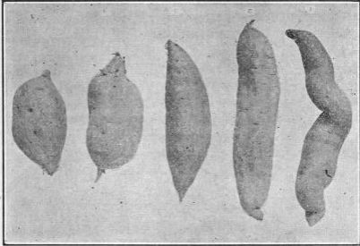

Sweet Potato (Ipomoea Batatas)
Description
This section is from the book "Vegetable Gardening", by Ralph L. Watts. Also available from Amazon: Vegetable Gardening.
Sweet Potato (Ipomoea Batatas)
623. History
There is no definite knowledge of the origin of the sweet potato, although it is believed the plant is native to the West Indies and Central America.
624. Botany
The sweet potato is perennial, although it is grown as an annual. It belongs to the morning-glory family or Convolvulaceae, the flowers with purplish throats and white margins, resembling those of the morning glory. The blooms are rare and may not produce seed. The trailing vines strike root at the joints and bear leaves which vary greatly in shape, being of three general types, viz., entire and not lobed, shouldered and lobed, and deeply cut and lobed. The general form of the leaf is heart-shape or halberd-shape. The tubers are also variable in shape, size and color. Some are long and cylindrical, others short, thick and blunt at the ends. The skin may be whitish, dull straw-color, light red or purple. The flesh is also variable in color, texture, moisture and quality. Classification of varieties is usually based upon the shape of the leaves.
625. Importance
The sweet potato is one of the most important vegetables grown in the United States. It is consumed in enormous quantities throughout the South, where it is generally grown. The average annual production in the United States is about 50,000,000 bushels. Every northern market is well supplied during most of the year. The sweet potato is grown much more extensively than the white potato in the southern states, and is a popular vegetable in practically all tropical countries, constituting in many instances an important source of food. The tubers are fried, baked, boiled and braised, and also used for pies like pumpkins. A considerable quantity is canned. In some sections the potatoes are fed to sheep, hogs and cattle. They may become important for the manufacture of denatured alcohol.
626. Varieties
Figure 100 shows some of the most important varieties. The shape is extremely variable. While there are a great many so-called varieties in cultivation, not more than 10 or 12 are of great commercial importance. According to Beattie (U. S. D. A. Farmers' Bulletin 324, p. 35), Big-Stem Jersey, Yellow Jersey and Red Jersey are the best representatives of the Jersey group (dry, mealy-fleshed varieties) and Southern Queen, Pumpkin Yam, Georgia, Florida and Red Bermuda are the most important varieties of the yam group (moist-fleshed varieties). In selecting varieties for local sales, market demands should be considered. Red potatoes sell most quickly on some markets, while others prefer white. Soil and climatic conditions must also be regarded.
Fig. 100. some of the commercial types of sweet potatoes. (i) black spanish or "nigger choker"; (2) long, jersey group; (3) long, cylindrical type; (4) red bermuda; (5) southern queen.
The following descriptions of leading varieties have been prepared by Beattie (U. S. D. A. Farmers' Bulletin 324, p. 35) :
Big-Stem Jersey
This variety is the most popular among growers who are supplying northern and eastern markets. It is a form of the Yellow Jersey, having been selected for its productiveness and dry, yellow flesh. The vines,are slender and long; the potatoes are of spindly shape and inclined to grow rather large; color of potatoes yellow; color of flesh light yellow or deep cream. While this variety yields heavily, it is unfortunately a rather poor keeper, and its flesh is inclined to become dry and "punky" toward spring. It will thrive well toward the North, but is better adapted for use as a commercial variety than for home consumption.
Yellow Jersey
The vines of the Yellow Jersey variety are long and more slender than those of the Big-Stem Jersey, and the potatoes are of spindle shape, but much smaller; otherwise the two varieties are very similar in appearance. The flesh is dry and mealy. This variety is a fairly good keeper and retains its quality well. It is adapted for home use and thrives under a wide range of conditions, but does not yield heavily enough for commercial purposes.
Red Jersey
This is similar to the Yellow Jersey variety, except that the roots are red and it is more productive under most conditions. It is suitable for home use.
Southern Queen, Or Hayman
The vines of this variety are strong and vigorous; the potatoes are large, thick, and blunt at ends or of short spindle shape; the color is white or light cream, while the flesh is of cream color, becoming darkened in cooking, moist, and very sweet. This variety is most extensively grown for market purposes where a sweet, moist-fleshed potato is demanded. The Southern Queen yields well, is an excellent keeper, and is adapted for both marketing and stock feeding and for home use in the South Atlantic and Gulf Coast States, but it does not mature when grown in the extreme North.
Pumpkin Yam
The vines are vigorous, short, sometimes of a bunch habit. The potatoes are of short spindle shape or quite round, with a dull yellow color on the outside. The flesh is orange or sometimes yellow and marbled with orange; it is moist and has a flavor very similar to that of good squash. This variety yields well and is adapted to home use and to stock feeding throughout the South.
Georgia, Or Split-Leaf, Yam
The vines of this variety are slender and long; the potatoes of medium size, spindle shape, yellow; the flesh a light yellow, marbled with salmon. The quality of this variety is excellent and very sweet, but it is a light yielder. It is a splendid sort for home use throughout the South Atlantic and Gulf Coast States.
Red Bermuda
The Red Bermuda vines are large and vigorous. The potatoes are usually large and overgrown with heavy ridges and veins. The color of the potatoes is rose red; flesh, creamy; quality fair but not so sweet as Southern Queen. This variety is a heavy cropper and suitable for feeding to stock. It is one of the few so-called yams which thrive in the northern portion of the sweet potato area.
Continue to:
Tags
plants, crops, gardening, cultivated, harvesting, food ,greenhouses, fertiliser, vegitables